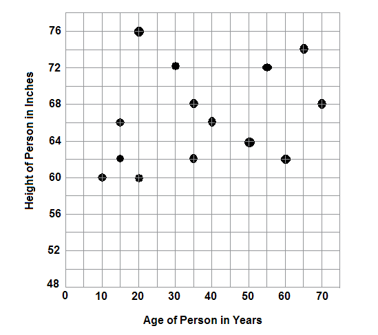
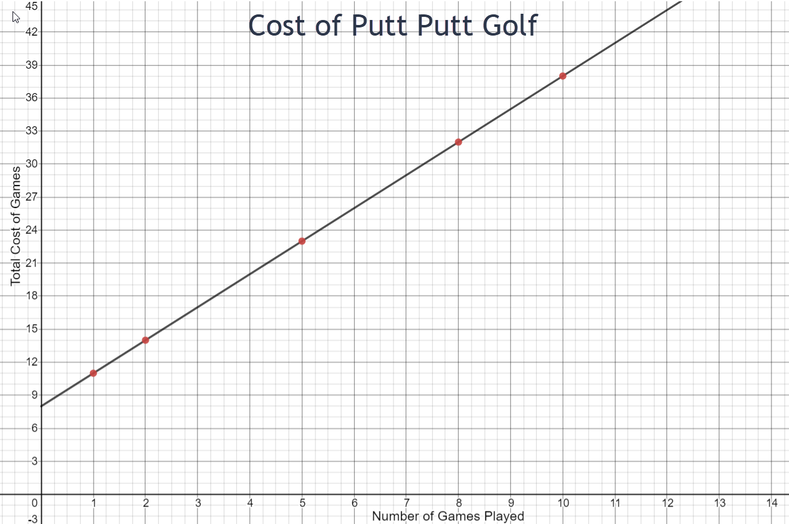
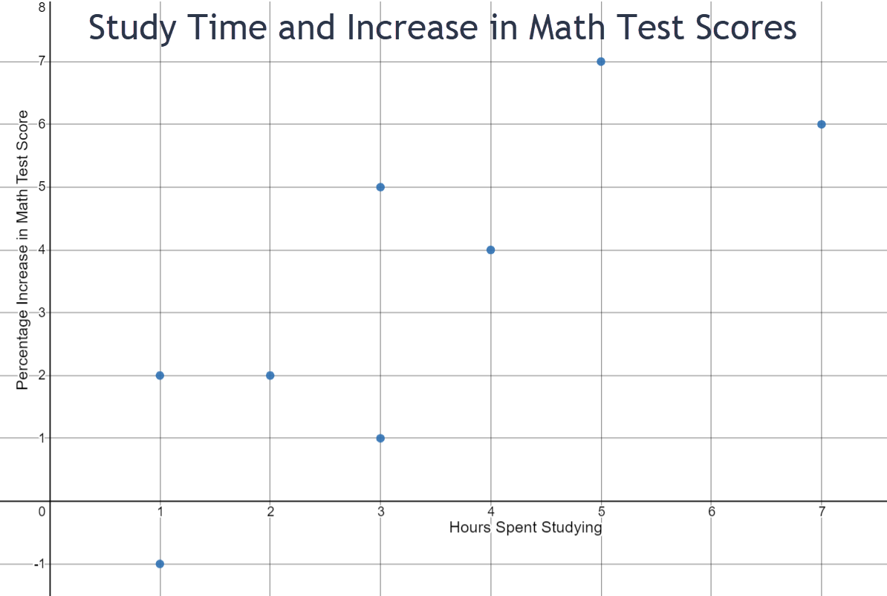
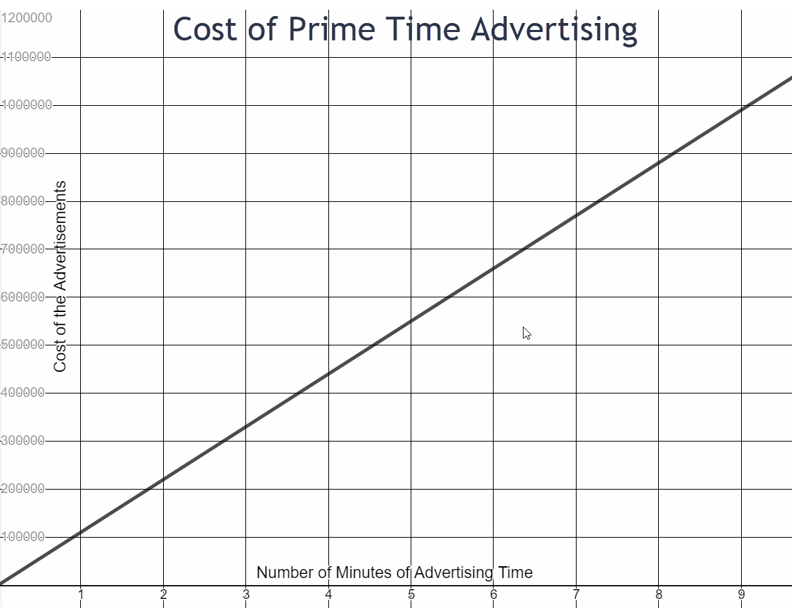
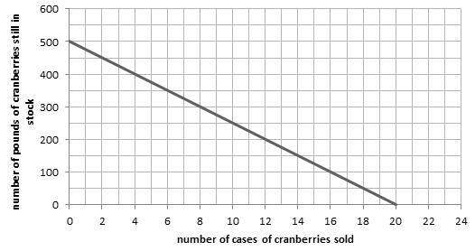
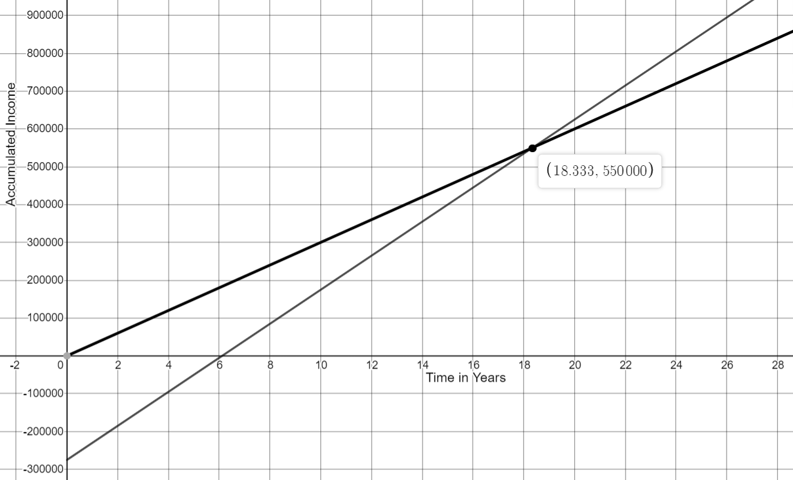

Statistics Unit
2.3 Interpreting Graphs
Introduction
In mathematics classes, you will learn how to draw many different types of graphs, from linear and quadratic graphs to graphs of trigonometric functions if you take Precalculus. When drawing these graphs, it is sometimes fairly easy to get the points plotted and connect them appropriately, but it is more difficult to explain what the points and other parts of the graph mean. Graphs are not just a bunch of random points placed on a grid to form a line or curve. Each point on the graph has a specific meaning in context of the stated problem. In this lesson, you will gain a firmer understanding of how to look at parts of a graph and give a clear interpretation of what each part means within the context of the problem.
The graph below is called a scatter plot of points. A scatter plot is a collection of points showing the relationship between two variables. Sometimes, a trend may be recognized by these points, but at other times, there may be no trend as in the example below.
- In this problem, 14 people were asked their age and their height was measured. Answer the following questions based on the graph.
- Only one person surveyed was 40 years old. How tall is this person? ________________
- Three people were 62 inches tall. How old were the three people? ________________________
- One point represented in the graph has the coordinates (20,76). Explain the meaning of this point within the context of this graph. Use a complete sentence for your explanation.
66 inches
15, 35 and 60 years old
A 20 year old in the survey is 76 inches tall.
- Katie is planning to play Putt Putt with her friends. The Putt Putt course in her town charges $8.00 to rent a club and ball but then only $3.00 for every 18-hole game she golfs. The equation that models this situation is
y=8.00+3.00x
where x represents the number of games played and y represents the total cost for Katie to golf. A table of values and a graph for this problem are pictured below.
Quantity Name Games Cost Unit Games Dollars Expression x 8.00+3.00x 1 11 2 14 5 23 8 32 10 38 - What would Katie’s total cost be if she played 12 games? _________________
- If Katie paid $26.00 to golf, how many games did she play? _______________
- The point (3,17) lies on this graph. Explain what this point means within the context of this problem.
- The graph of this line is rising from left to right. In a complete sentence, explain why this is happening.
Answer the following questions based on the graph.
8 + 3 * 12 = $44
6 games
Katie pays $17 to play 3 games.
The cost increases as the number of games played increases.
Group Assignment
Study each of the pictured graphs and answer the questions that follow each graph. Be sure to use a complete sentence in your answers where appropriate.

- Use the scatter plot above to answer the following questions.
- What would be an appropriate title for this graph?
- What is being measured on the horizontal axis?
- What is being measured on the vertical axis?
- Two students in the sample studied for 3 hours. What were their percent increases in their math test scores? State your answer as a complete sentence.
- How many hours did one student study whose test score increased by 2 percent? Use a complete sentence in your explanation.
- Do you see a relationship between the amount of time that a student studies and the percentage of increase in the math test score? Explain the relationship in a complete sentence.
- Is (-1,-5) a valid point that could be on this graph? Explain your answer in a complete sentence.
Increase in Test Scores Compared to the Number of Hours Studying
Number of hours spent studying
Percentage increase in math test score
One student who studied three hours increased her test score by nearly 1%. The other student who studied for 3 hours increased her test score by nearly 5%.
One student whose test score increased by 2% studied for 1 hour.
The trend seems to be that the more you study, the higher increase in your math test score.
No. A student cannot study for a negative number of hours.
-
In 2011, one minute of prime-time television advertising time cost $110,000. The equation that models this situation is
y=110000x
where x is the number of advertising minutes and y is the cost of each advertisement. The graph is a linear graph and is shown below.
- What is an appropriate title for this graph?
- If an advertisement is 6 minutes long, what is the approximate cost of the advertisement? State your answer in a complete sentence.
- If the cost of one advertisement is approximately $500,000, how long is the advertisement? State your answer in a complete sentence.
- What is the cost of a twelve-minute advertisement? How did you find this answer?
- The graph is increasing from left to right. In a complete sentence, explain this.
- The point (-2, -220000) would lie on this line if the bounds for the x-axis and the y-axis included negative numbers. Is this a valid point for this situation? In a complete sentence, explain why or why not.
Cost of Prime Time TV Advertising
The approximate cost of a 6 minute ad is $670,000
A $500,000 ad is approximately 4.5 minutes long.
y = 11,000 * 12 = $1,320,000
As the number of advertising minutes increases, the cost of the ad increases.
No. An ad cannot run for -2 minutes and an ad cannot cost a negative amount of money.
-
Green Bulk is an internet wholesaler where dried fruits and nuts can be bought in large quantities for use by grocery stores, gourmet markets, coffee shops, and other small businesses. The manager of one specialty store buys 20 cases of organic dried cranberries. Each case contains 25 pounds of dried cranberries. The equation that models this situation is
y=500-25x
where x represents the number of cases of dried cranberries that are sold at the specialty store and y represents the number of pounds of dried cranberries that are still in stock at the specialty store. The graph is a linear graph and is shown below.
- What would be an appropriate title for this graph? Keep it short and to the point.
- If the store sells 16 cases of cranberries, how many pounds of cranberries are still in stock? Use a complete sentence in your answer.
- If the store sells 8 cases of cranberries, how many cases of cranberries are still in stock? Use a complete sentence in your answer.
- If the store has 500 pounds of cranberries, how many cases does he have in stock and how many cases has he sold? Use a complete sentence in your answer.
- The graph is falling from left to right. Use a complete sentence to explain the reason for this.
- The point (24,-100) fits the equation that models this situation. Is it an appropriate point for this graph? Use a complete sentence to explain why or why not.
- Are there any valid points that would lie on this graph that are beyond the boundaries of the graph as it is currently drawn? If the answer is yes, please give an example and explain what it means within the context of this problem. If the answer is no, please use a complete sentence to explain your answer.
Amount of Cranberries in Stock at Green Bulk.
There are 100 pounds of cranberries in stock when 16 cases are sold.
There are 12 cases of cranberries still in stock when 8 cases are sold.
If the store has 500 pounds of cranberries, none of the stock was sold so all 20 cases are still left.
As the number of cases sold increases, the amount of cranberries in stock decreases.
No. Once 20 cases are sold, the stock is gone.
No. There are 20 cases available at the beginning and nothing left when 20 cases are sold.
-
A recent graduate of dental school has investigated two different options for her future. She could go to work for a large organization, which will provide her with an office and all that is needed to go with it, or she could start her own business. She has been told that if she chooses the first option, after taxes she could expect to make about $30,000 per year. She learns, however, if she decides to start her own business, she will need an initial investment of $275,000 to buy an office and the equipment needed to set up her practice. She could expect, after taxes, staff salaries and benefits, lab costs, interest on her initial investment, and various other annual costs, to make about $45,000 per year. The system of equations that model this situation is
y=30000x
y=45000x-275000
where x is the number of years she has worked and y represents her salary for each of the two options. The graph of this system is below.
- What does the black line (Option A) on this graph represent? What does the gray line (Option B) on this graph represent? Use complete sentences in your answer.
- The point of intersection of the two lines on this graph is (18.33, 550000). In your own words and using complete sentences, please explain what this point of intersection means within the context of this problem.
- The point (10, 175000) lies on which line? Explain what this point means within the context of this problem. Use a complete sentence in your answer.
- The point (1, 30000) lies on which line? Explain what this point means within the context of this problem. Use a complete sentence in your answer.
- Is the point (36, 1345000) a valid point for the gray line (Option B)? Explain your answer in a complete sentence.
Option A is her first job option in which she would be making about $30,000 per year at a larger organization. Option B is her second job option in which she would start her own business.
If she works for either option for about 18.33 years, she will be making the same amount of money at each, $550,000.
If she chooses to start her own business, she will have accumulated $175,000 in her tenth year.
If she chooses Option A, she will make $30,000 in her first year.
Yes. After 36 years of working, she will have accumulated $1,345,000.